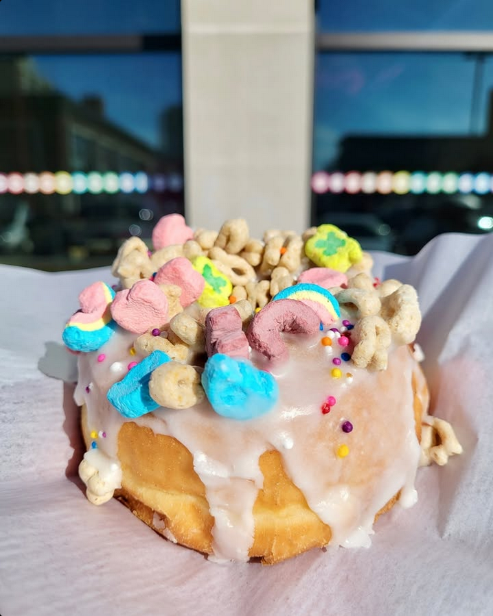
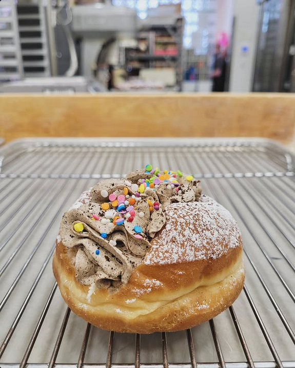
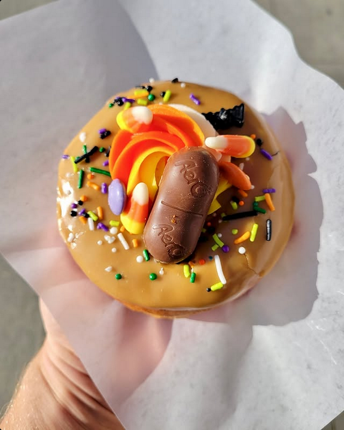
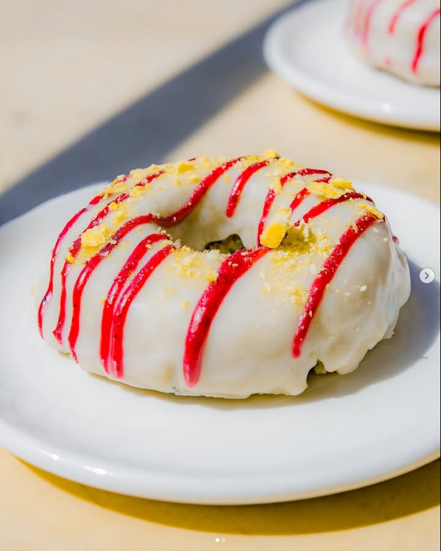
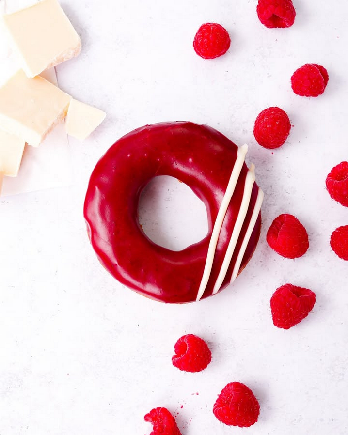
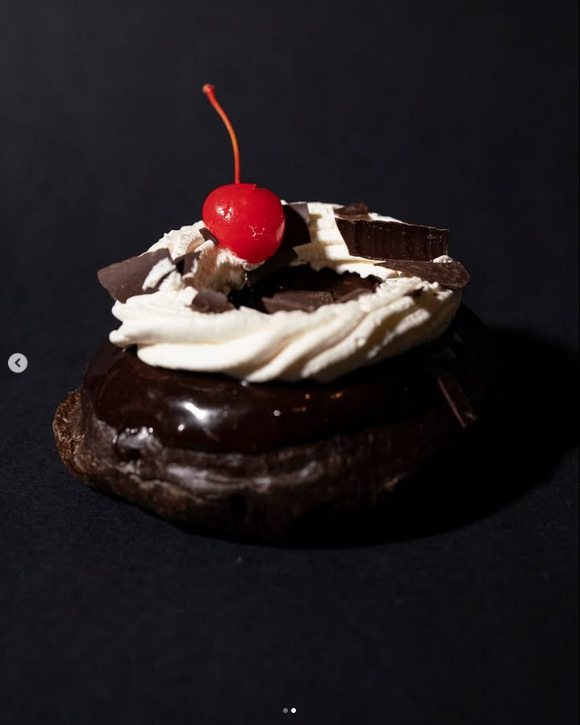
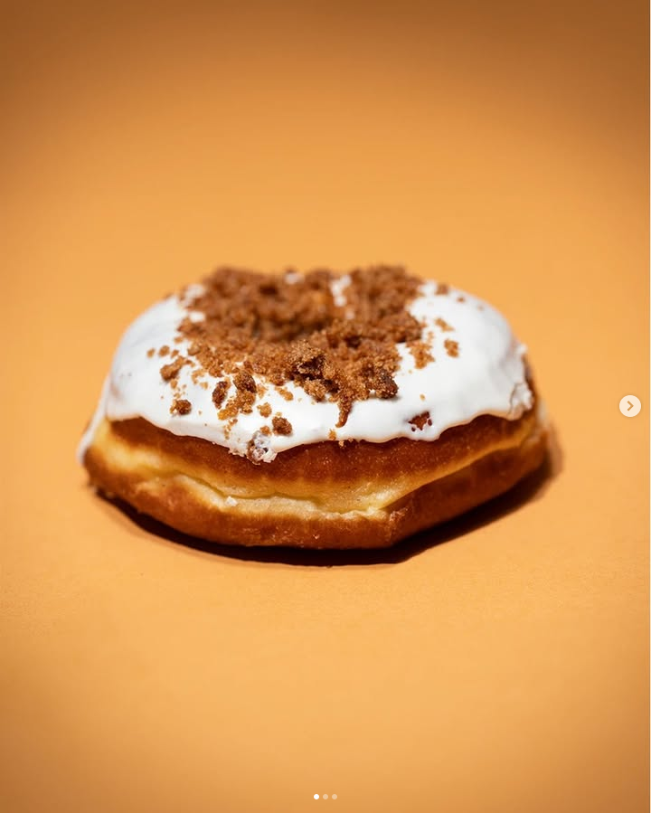
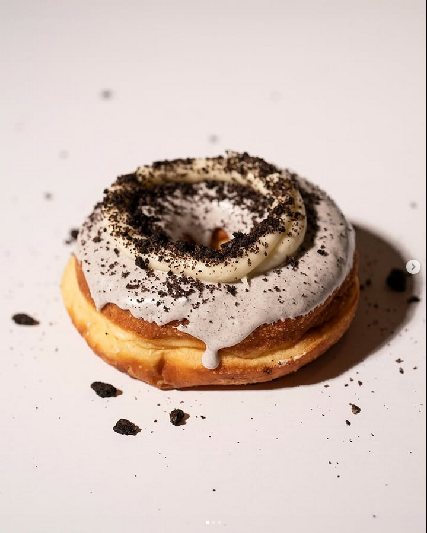

3. Doughnut Party
Edmonton, Alberta
Doughnut Party has become a beloved name in Canada's gourmet doughnut scene,
with four locations—three in Edmonton and one in Calgary. Established in 2017,
the bakery is approaching nine years of delighting customers with its fun, creative,
and freshly baked doughnuts. Known for their bold flavors and artistic presentation,
Doughnut Party has built a strong following, expanding their stores to meet increasing
demand and popularity. One of the standout features of Doughnut Party is its
ever-changing weekly menu, which introduces new and inventive doughnuts while
rotating out past flavors. While this keeps things fresh and exciting,
it also means that if you fall in love with a particular doughnut, you might have to
wait for it to return. Some of my personal favorites from their lineup include:
- Vanilla Dipped Lucky Charms: A nostalgic treat with a colorful and sweet cereal topping.
- Mothership: A rich and indulgent option that lives up to its name.
- Candy Conucopia: A playful, seasonal creation perfect for those who enjoy a mix of flavors.



2. Cartems Donuts
Vancouver, British Columbia
Cartems Donuts is a must-visit spot in Vancouver for any doughnut enthusiast. Known for its commitment
to quality ingredients and unique flavors, Cartems has built a strong reputation for crafting
doughnuts that are as delicious as they are innovative. The bakery focuses on using organic,
locally sourced ingredients and offers a variety of options, including classic, gluten-free, and
vegan-friendly doughnuts. Some standout options from Cartems' menu include:
- Blueberry Cornbread: A perfect mix of sweet and savory, with a moist cornbread base infused with fresh blueberries.
- White Chocolate Raspberry: A decadent doughnut topped with creamy white chocolate and a tangy raspberry drizzle.
- S'mores Creamsicle: A nostalgic treat featuring rich chocolate, toasted marshmallow, and a citrusy creamsicle twist.



1. SuzyQ Doughnuts
Ottawa, Ontario
Suzy Q Doughnuts has become an iconic name in Ottawa's pastry scene, offering some of the most inventive
and delicious doughnuts in the city. The bakery takes pride in its high-quality ingredients and its famous,
fluffy doughnut base. Some standout flavors include:
- Black Forest: A chocolate lover's dream with rich layers of cherry and cream.
- Carrot Cake: A warm spiced doughnut topped with a luscious cream cheese glaze.
- Vanilla Bean Glaze with Oreo Sprinkles: A sweet classic with a crunchy twist.


